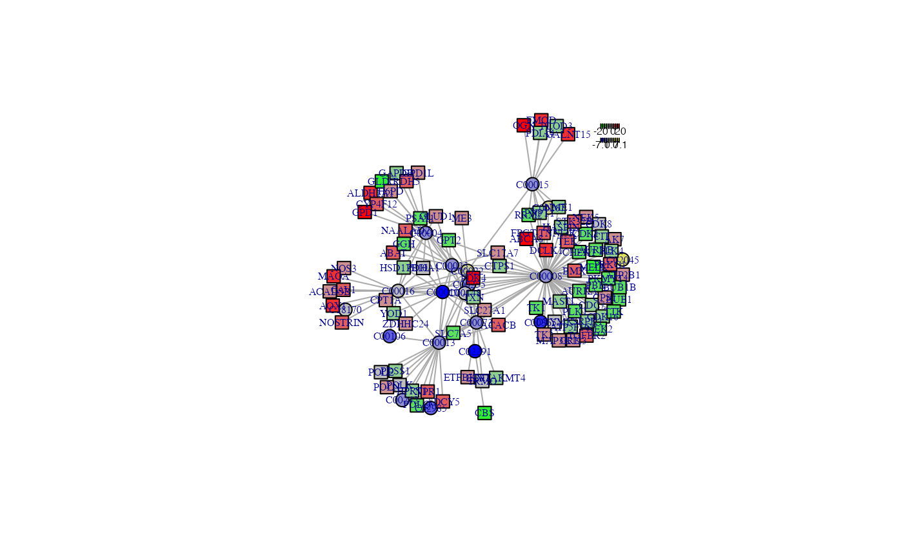
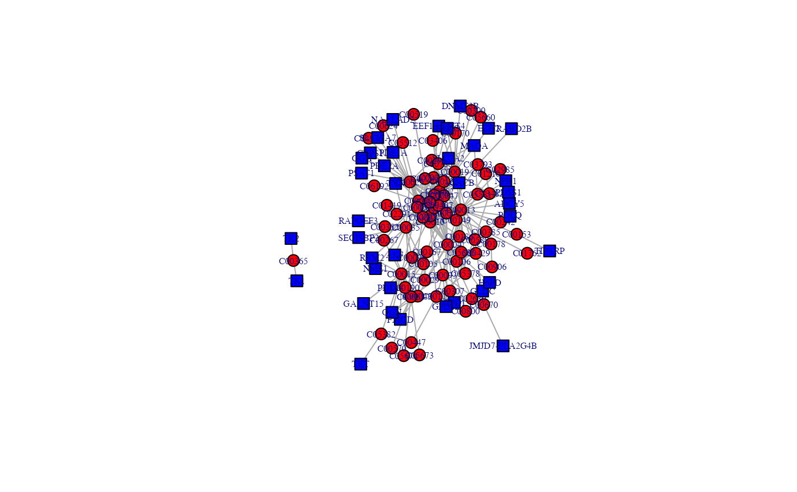

The subnetwork's extraction
pdnet.RdThe subnetwork's extraction
Arguments
- diff_metabolite
the differential metabolite information, the name 's kegg id
- diff_gene
the differential genes information
- nsize
the desired number of nodes constrained to the resulting subgraph
Examples
names(diff_meta)[4] <- "p_value"
diff_metabolite <- diff_meta %>%
dplyr::filter(adj.P.Val < 0.01) %>%
dplyr::filter(abs(logFC)>1)
names(diff_gene)[4] <- "p_value"
diff_gene1 <- diff_gene %>%
dplyr::filter(adj.P.Val < 0.01) %>%
dplyr::filter(abs(logFC)>1)
a <- pdnet(diff_meta,diff_gene,nsize=100)
#> Start at 2024-09-05 14:56:36
#>
#> First, fit the input p-value distribution under beta-uniform mixture model (2024-09-05 14:56:36)...
#> A total of p-values: 17978
#> Maximum Log-Likelihood: 29984.0
#> Mixture parameter (lambda): 0.109
#> Shape parameter (a): 0.225
#> Second, determine the significance threshold (2024-09-05 14:56:36)...
#> Via constraint on the size of subnetwork to be identified (100 nodes)
#> Scanning significance threshold at rough stage (2024-09-05 14:56:36)...
#> significance threshold: 1.00e-11, corresponding to the network size (0 nodes) (2024-09-05 14:56:36)
#> significance threshold: 1.00e-10, corresponding to the network size (0 nodes) (2024-09-05 14:56:36)
#> significance threshold: 1.00e-09, corresponding to the network size (0 nodes) (2024-09-05 14:56:36)
#> significance threshold: 1.00e-08, corresponding to the network size (1 nodes) (2024-09-05 14:56:37)
#> significance threshold: 1.00e-07, corresponding to the network size (1 nodes) (2024-09-05 14:56:37)
#> significance threshold: 1.00e-06, corresponding to the network size (30 nodes) (2024-09-05 14:56:37)
#> significance threshold: 1.00e-05, corresponding to the network size (84 nodes) (2024-09-05 14:56:39)
#> significance threshold: 1.00e-04, corresponding to the network size (198 nodes) (2024-09-05 14:56:43)
#> Scanning significance threshold at finetuning stage (2024-09-05 14:56:43)...
#> significance threshold: 1.50e-05, corresponding to the network size (95 nodes) (2024-09-05 14:56:45)
#> significance threshold: 2.00e-05, corresponding to the network size (96 nodes) (2024-09-05 14:56:48)
#> significance threshold: 2.50e-05, corresponding to the network size (110 nodes) (2024-09-05 14:56:50)
#> significance threshold: 2.50e-05
#> Third, calculate the scores according to the fitted BUM and FDR threshold (if any) (2024-09-05 14:56:50)...
#> Amongst 17978 scores, there are 920 positives.
#> Finally, find the subgraph from the input graph with 2796 nodes and 8507 edges (2024-09-05 14:56:50)...
#> Size of the subgraph: 110 nodes and 156 edges
#>
#> Finish at 2024-09-05 14:56:54
#> Runtime in total is: 18 secs

a <- pdnet(diff_metabolite[,8],diff_gene1[1:500,8])
